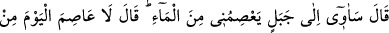
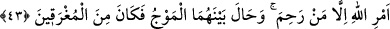
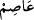

Eğer: “Nuh’a vahyolundu ki: “Kavminden, îmân etmiş olanlardan başkası artık
inanmayacak.” (Hûd, 11/36) âyeti, onların îmân etmesi ümidini ortadan kaldırdığına
göre, Nuh (a.s.), oğlunun inanması için ona nasıl seslenebilir?” dersen şöyle derim: “Bu
ifade, Nuh (a.s.)’ın oğlu hakkında bir nas değildir. Tıpkı “aleyhlerinde
(boğulacaklarına) hüküm verdiklerimiz dışında” ifadesi gibi. Ayrıca Allah Teâlâ
kendilerine özel olarak haber verene dek hiçbir matlûbu imkansız görmemek, kâmil
zatların özelliklerindendir. Onlar ancak o matlûbu ilgilendiren bir haber geldiğinde
Rablerini tasdik ederek o şeyin gerçekleşmesinin imkansızlığına hükmederler. Musa
(a.s.)’ın Allah’ı görmek istedikten sonra bunun imkansız olduğu kendisine bildirilince
tevbe edip îmân etmesi de buna bir örnek teşkil eder.
43. “Oğlu: “Beni sudan koruyacak bir dağa sığınacağım.” dedi. Nuh: “Bugün
Allah’ın emrinden (azabından), merhamet sâhibi Allah’tan başka koruyacak kimse
yoktur.” dedi. Aralarına dalga girdi, böylece o da boğulanlardan oldu.
“Oğlu:” “Yüksekliği sayesinde “beni sudan koruyacak” suyun ulaşmasını
engelleyecek dağlardan “bir dağa sığınacağım.” Böylece boğulmaktan kurtulacağım.
Ne inanırım ne de gemiye binerim “dedi.” O, tufanın da genellikle yüksek bir yere
çıkılarak kurtulunan diğer normal su ve seller gibi olduğunu sanıyor, tufanın yegâne
gayesinin kâfirleri helak etmek olduğunu, mü’minlerin sığındığı yere sığınmaktan başka
bir yolla ondan kurtulmanın mümkün olmadığını bilmiyordu.
“Nuh: Bugün Allah’ın emrinden” yani tufandan ibaret olan azabından, “merhamet
sâhibi Allah’tan başka koruyacak kimse yoktur.” O günün birtakım sebeplere sığınarak
kurtulmanın mümkün olduğu olayların meydana geldiği diğer günler gibi olmadığına
dikkat çekmek maksadıyla âyette ‘bugün’ lâfzı ilâve edilmiştir. Âyette ayrıca tufana ‘su’
diyen ve onun yüksek bir yere kaçarak kendisinden kurtulmanın mümkün olduğu diğer
sular gibi olduğunu vehmeden Nuh’un oğlunun hatâsına dikkat çekilmektedir. Yapılan
istisnâ ile de kurtulmanın ancak Cenâb-ı Hak sayesinde mümkün olduğu
belirtilmektedir.
Âyette “Allah’ın azabından ancak O koruyabilir.” denilmeyip “ancak merhamet sâhibi
kurtarır,” yani ancak merhamet eden -ki o da Allah’tır- kurtarır denilmiştir. Böylece
önce kapalı bırakıp sonra açıklayarak, önce mücmel bırakıp sonra mufassal hale
getirerek Allah’ın şânı daha da yüceltilmiştir. Yine Allah’ın rahmetinin gazabından önce
gelmesi gereğince bu kurtarmadaki illetin Allah’ın rahmeti olduğu hissettirilmiştir. “__WORD__” kelimesi de korur mânâsındadır.